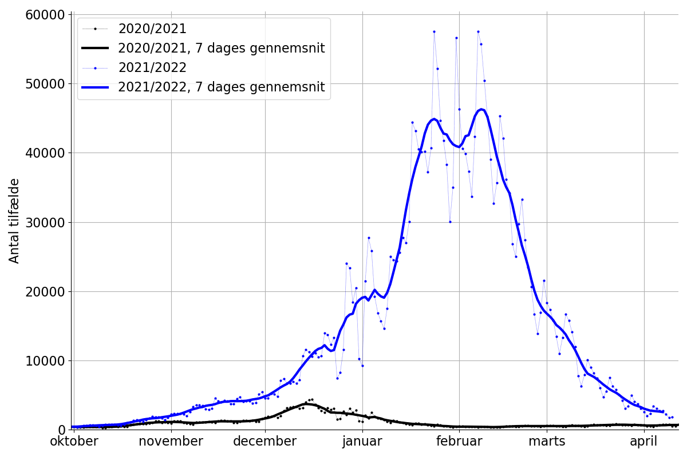
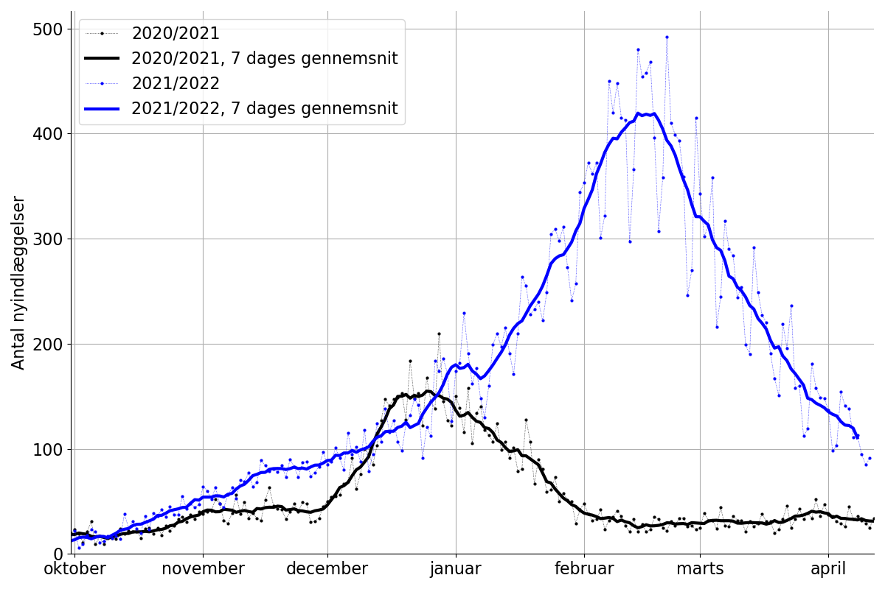
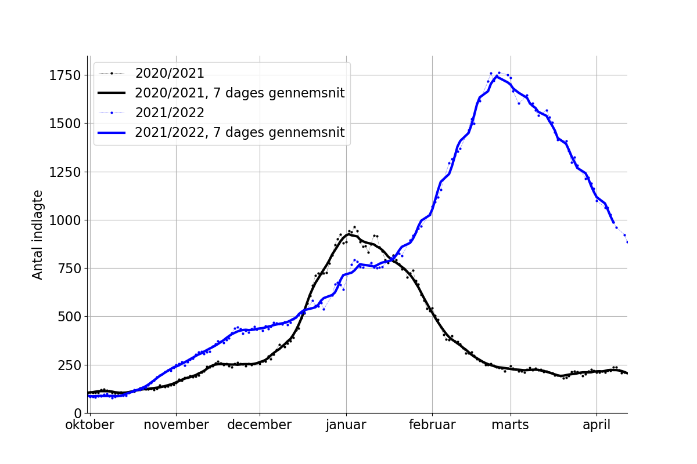
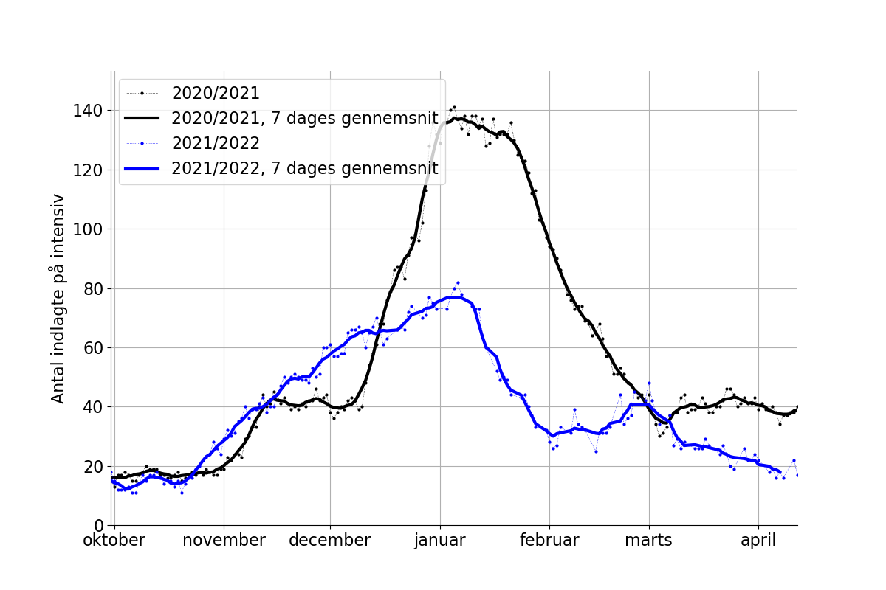
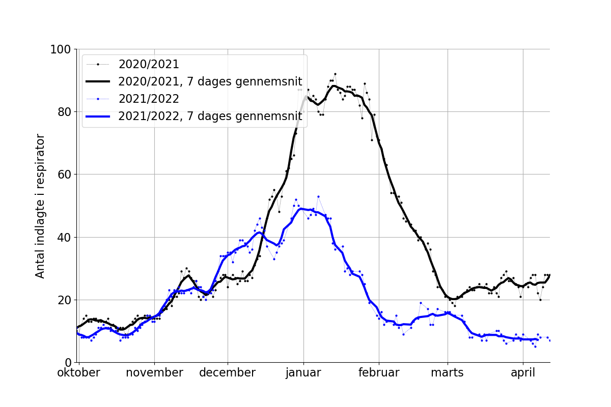
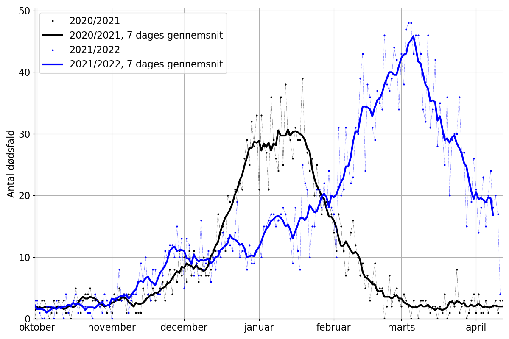
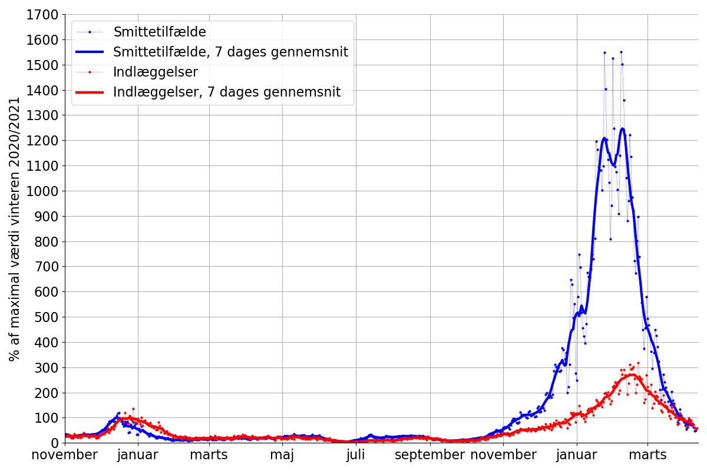

Tilfælde er baseret på positive COVID-19 PCR-test.
Data på figuren er vist ud fra den dag prøven er taget. Af denne grund er data for den seneste dato udeladt.


| Intensiv | Respirator |
|---|---|
|  |  |

Forklaring:
Antallet af smittetilfælde (blå) og antallet af nyindlæggelser er normeret sådan at det maksimale antal i vinteren 2020/2021 er 100%. Værdien for 7-dages gennemsnit er benyttet. Herunder ses data gående tilbage til december 2020 som illustration.

Når smittetilfælde viser 500% vil det altså sige at der er 5 gange så mange tilfælde som sidste år. Indlæggelsesraten per fundne smittetilfælde ses at være betydeligt lavere.